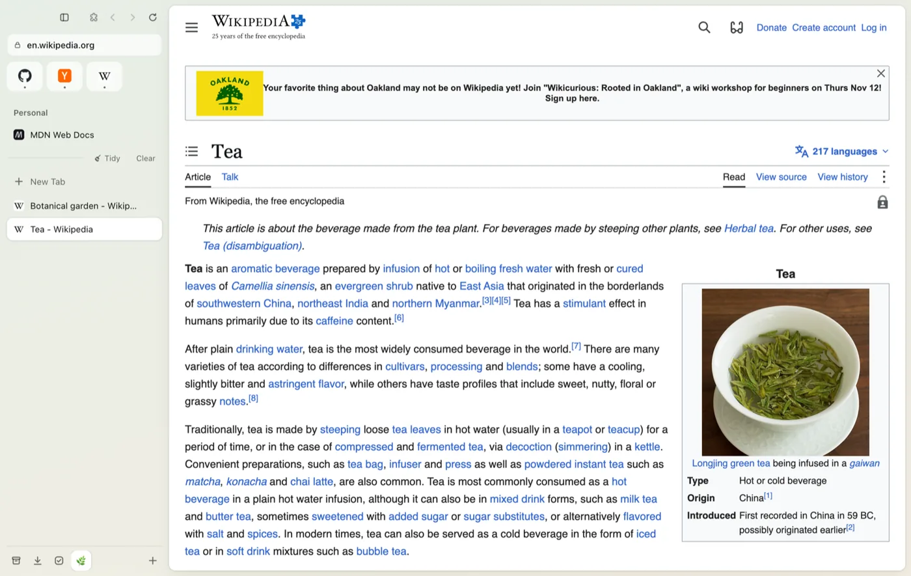
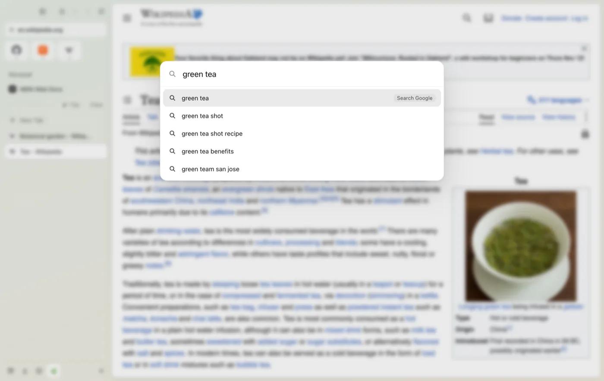
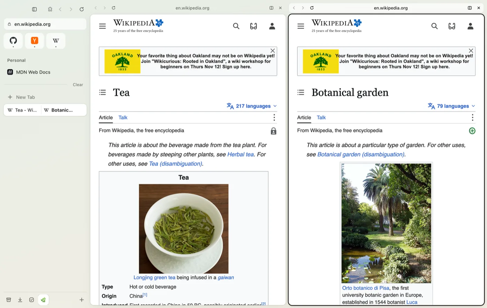
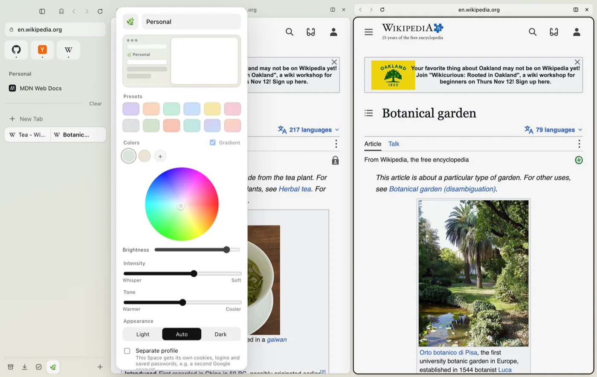

Free & open source · for Mac
A calm, sidebar‑first
browser for Mac.
VAIA keeps your tabs in a tidy sidebar, gives every part of your life its own Space, and gets out of the way so the web can breathe.
Latest release · Apple silicon (M1–M4) · Intel Mac?

Take a tour
Click around.

Press ⌘T and just type. Search the web, jump to an open tab, find something from your history, or run a command like New Space or Copy URL, without touching the mouse.

Drag a tab onto the page to put two, three or four tabs side by side. Pick a layout (50/50, 70/30, columns or a grid) or drag the dividers yourself. The whole group shows up as one item in the sidebar.

Make a Space for school, work, or just you. Each one has its own tabs, an emoji, and a soft pastel theme you can tune from a whisper to a soft wash. Spaces can even keep separate logins.
Everything inside
Small details, everywhere.
Stay organized
- Spaces with their own tabs, colors and logins
- Tidy groups tabs into folders, optionally with AI
- Auto-archive for tabs you've stopped using
- Library with your archive, downloads, media and boosts
- To-do list for each Space, or one for everything
- Live Folders that fill themselves from a feed
Move fast
- Command Bar for search, tabs, history and commands
- Split View for up to four tabs at once
- Peek previews links in a floating card
- Little window for quick lookups
- ⌃Tab to flip between recent tabs
- Mini Player keeps your video or call in reach
Make it yours
- Pastel themes with intensity and tone sliders
- Boosts to restyle any website, or zap things away
- Notes & Easels for thoughts and moodboards
- Capture any part of a page with ⌘⇧2
- Rename any tab, and put the sidebar on either side
- Chrome extensions from the Chrome Web Store
Private by default
- No account, no server. Your data stays on your Mac
- Built-in ad & tracker blocker
- Password manager locked with Touch ID
- Asks first before sites use your camera or location
- Private windows that forget everything
- Open source, so anyone can read the code
Install
Up and running in a minute.
- Download the
.dmgwith the button above. Choose the Intel version if your Mac isn't Apple silicon (Apple menu → About This Mac → Chip). - Open it and drag VAIA into your Applications folder.
- Open VAIA. macOS will say it can't check it, because VAIA isn't signed by a paid Apple developer account yet.
- Go to System Settings → Privacy & Security, scroll down and click Open Anyway. You only do this once per version.
FAQ
Good questions.
Is VAIA free?
Yes. It's free and open source under the GPL-3.0 licence. There are no ads, no accounts and no subscriptions.
Why does macOS warn me when I open it?
Apple shows that warning for apps that aren't signed with a paid Apple Developer account. VAIA's code is public on GitHub, so you can see exactly what it does. Use Open Anyway in Privacy & Security to continue.
Where is my data stored?
Only on your Mac. Tabs, Spaces and settings are saved locally, and passwords are encrypted with your Mac's Keychain. VAIA has no server.
Does it work with Netflix and other streaming sites?
Most sites work, including YouTube. Some protected streaming services (like Netflix) need an extra signing step that isn't finished yet. It's on the list below.
Can I use Chrome extensions?
Many of them, yes. You can install from the Chrome Web Store. A few extensions rely on Chrome-only features and won't work fully.
Is there a Windows or iPhone version?
Not right now. VAIA is made for the Mac.
Your turn
Got an idea? Found a bug?
VAIA is a work in progress, and I read every message. Tell me what you'd love to see, what feels off, or how you use it.
Coming up next
- Planned Signed & notarized app, with no "Open Anyway" step
- Planned Automatic updates
- Planned Netflix & streaming support
- You decide Whatever you suggest above
Made by
Vanessa Minerva Lim
I'd never written code before VAIA. I wanted a browser that felt calm, so I built one, phase by phase, learning as I went.